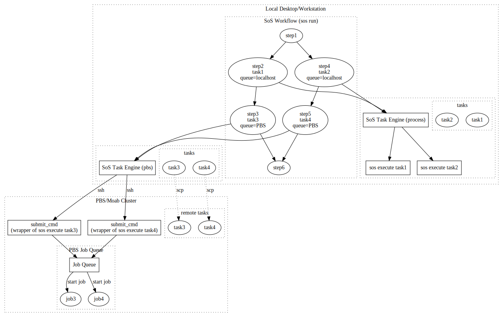

A complex workflow usually have a large number of steps, most of them are light-weight and can be executed locally, but some of them can be time- and resource-consuming and would better be executed on dedicated servers or cluster systems. There are several approaches in running such workflows, namely,
Execute the entire workflow on the cluster as a single multi-processing job. This is not ideal because 1). you would have to allocate enough resource for the most CPU and RAM-demanging step and longest execution time for the most time-consuming step but these resources are not utilized efficiently, and 2). you are limiting yourself to a single node and cannot really execute the workflow in parallel.
Separate the workflow by steps and submit them as separate tasks to a queuing system. This approach allows better parallelization but it can be difficult and time consuming to execute a large number of small jobs, because these tasks might spend more time waiting than running.
Running a workflow on a cluster system requires a running server (task dispatcher, corrdinator) to corrdinate the execution of dependent steps. This has posed a problem, at least to our clusters because such processes are not allowed on the head node.
To address these problems, SoS taks a different approach than mose other workflow systems.
SoS defines workflows as steps to execute certain procedures on input files (forward-style), or as steps to produce desired outputs (makefile style). All steps, regardless of their sizes (requirement for resources), are written as a single workflow. That is to say, a long running sequence alignment step and the relatively quick statistical analysis steps would be defined as a single workflow. steps are not separated because of their different hardware/software requirements.
SoS executes all steps directly as a complete workflow. The workflow is executed in a multi-processing manner where multiple processes (by default to 4) are used to execute different branches of the DAG (Direct Acyclic Graph) in parallel.
Part of the steps can be defined as tasks that are executed externally. SoS tasks have the following properties:
SoS tasks can be executed locally as separate processes, remotely on a remote server, sent to distributed task-queues (such as rq or Celery, or cluster systems based on PBS, Torch, or SunGrid. SoS handles file synchronization so tasks could be submitted to queues with their own file systems.
SoS can wait for the completion of the tasks as if they are just long-running jobs executed locally. Alternatively, sos could exit and wait for the completion of external tasks. Command sos status or task-queue-specific methods could be used to monitor the execution of tasks.
After the completion of the tasks, you could rerun the workflow and SoS would resume execution from the point where it was stopped.
This external execution model offers great flexibility in the execution of workflows. For example,
queue of a single task.-q option of command sos run.-q option.The following figure illustrates the task model of SoS

Basically,
submit_cmd could be used to submit tasks to batch systems such as PBS/Moab.A step process consists of everything after the input statement. It can be repeated with different input groups defined by input options group_by or for_each. For example, if bam_files is a list of bam files,
[10]
input: bam_files, group_by=1
output: "${_input}.bai"
run:
samtools index ${_input}execute a shell script to process each bam file. This is done sequentially for each input file, and is performed by SoS.
You can easily specify part of the step process as tasks, by prepending the statements with a task keyword:
[10]
input: bam_files, group_by=1
output: "${_input}.bai"
task:
run:
samtools index ${_input}This statement declares the rest of the step process as a task. For each input file, a task will be created with an ID determined from task content and context (input and output files, variables etc). The task will be by default executed by a process task queue where tasks are started as background processes.
The benefit of executing tasks externally is that you can execute tasks concurrently, on the local machine or a remote server, or be submitted to a task queue. For example, using
[10]
input: bam_files, group_by=1
output: "${_input}.bai"
task: concurrent=True
run:
samtools index ${_input}Multiple tasks could be executed in parallel (but on the same machine), and you can use command
sos run myscript -q clusteror use option queue
[10]
input: bam_files, group_by=1
output: "${_input}.bai"
task: concurrent=True, queue='cluster'
run:
samtools index ${_input}to submit the commands to a cluster system to be executed on different computing nodes.
This document focuses on the configuration of servers and the use of task options to execute tasks on different types of servers or task queues. It provides a comprehensive list of options while the Remote Execution tutorial gives a more step-by-step tutorial on how to configure and use the remote execution features.
A server or task queue needs to be defined in SoS configuration file. SoS automatically loads a global configuration file ~/.sos/config.yml, and a local configuration file ./config.yml. You can also put your settings in any configuration file and specify it with option -c. We recommend that you define all host configuration in global configuration file ~/.sos/config.yml so that it can be used by all your projects.
The configuration file could be edited manually if you are familiar with the YAML format. Otherwise you can use the sos config command to add or modify settings. For example, command
sos config --global --set hosts.shark.address username@shark.com
would write to ~/.sos/config.yml the following content
yml
hosts:
shark:
address: username@shark.comThis effectively defines a host with alias shark. All configurations related to this host should be defined under shark.
address¶IP address or URL to the remote host. Name localhost can be used for localhost. If you have a different user name on the the remote host, specify the address in the format of username@hostaddress.
Note that SoS does not support username/password authentication and you will have to set up public key authentication between local and remote hosts to communicate with remote host.
path_map¶path_map is a list of directory mappings between local and remote directories. Paths in a path_map should be absolute path and a local path will be converted to absolute path before mapping. For example, a path_map
/Users/myuser/:/home/myuser/would map test/a.txt under home directory to /home/myuser/test/a.txt, and map /Users/myuser/resources to /home/myuser/resources.
Multiple path_map could be defined and a path is mapped by the first matching path_map. For example,
/Users/myuser/projects/:/home/myuser/scratch/projects/
/Users/myuser:/home/myuserwill map /Users/myuser/projects/input.fastq to /home/myuser/scratch/projects/input.fastq, and /users/myuser/a.txt to /home/myuser/a.txt.
The order of the map is significant and the second path_map in the following configuration will be ignored because it is shadowed by the first one.
/Users/myuser:/home/myuser
/Users/myuser/projects/:/home/myuser/scratch/projects/shared¶Option shared tells SoS which file systems are shared between local and remote hosts so that it does not have to synchronize files under these directories between the hosts.
You will need to
shared to / (root) if your local and remote host share all file systemsShared file systems do not have to be mounted at the same locations. For example, a local file system /projects might be available at the remote host under /scratch/projects. In this case, you should
/projects as shared so that files under /projects will not be copied./projects:/scratch/projects in path_map so that the path can be correctly translated between local and remote hosts.send_cmd¶SoS uses rsync command to exchange files between hosts, and use ssh to execute command. If the default commands do not work for your configuration (e.g. if you do not have rsync and need to use scp, you can define options send_cmd (and received_cmd and execute_cmd) for your particular configuration. These variables should be defined with ${source} and ${dest} which will be replaced by source and destination filenames for each file.
It is rather tricky to define send_cmd for all scenarios (files, directories, missing directory on remote host) so it is usually easier to install rsync and use system default send_cmd than defining send_cmd by youself.
receive_cmd¶Command to receive files from remote server. It is usually easier to install rsync than defining this option.
execute_cmd¶Command to execute a command on remote host. The default value should work in almost all cases.
queue_type¶Option query_type determines the type of remote server or job queue. SoS currently supports the following types of job queues:
process: this is the default queue type. Tasks are executed directly, either on local host or on a server.pbs: A PBS/MOAB cluster system where tasks are submitted using commands such as qsub.rq: A redis queue where tasks are submitted to the rq server and monitored through rq-dashboard.celery: A celery queue where tasks are submitted to the celery server and monitored through celery's flower modulestatus_check_interval¶Option status_check_interval determines frequency at which SoS checks status of jobs. This is set by default to 2 seconds for process queue type, and 10 seconds for all other types. This number should be set to at least 60 for remote servers and longer jobs because it can be a burden to query the status of jobs very frequently.
max_running_jobs¶Maximum number of running jobs. This setting controls how SoS releases tasks to job queues and is independent of possible maximum running job settings of individual task queues.
This option is set to 10 by default.
You can define arbitrary key value pairs in the host configuration. These variables could be used for the interpolation of commands and templates. For example, if you define
yml
queue: longYou could use
#PBS -q ${queue}
in your PBS job templates (configuration template_file or job_template).
redis_host¶Address of the redis server, default to localhost.
redis_port¶Port of the redis server, default to 6379.
broker¶broker configuration of celery app.
backend¶backend configuration of the celery app.
template_file¶template_file should point to the location of a template file (available locally, not on remote host) that will be used to generate a shell script that will be submitted to the PBS system. A typical template would look like
#!/bin/bash
#PBS -N ${task}
#PBS -l nodes=${nodes}:ppn=${ppn}
#PBS -l walltime=${walltime}
#PBS -l mem=${mem}
#PBS -o ${cur_dir}/${task}.out
#PBS -e ${cur_dir}/${task}.err
#PBS -q long
#PBS -m ae
#PBS -M your@email.address
#PBS -v ${cur_dir}
cd ${cur_dir}
sos execute ${task} -v ${verbosity} -s ${sig_mode} ${'--dryrun' if run_mode == 'dryrun' else ''}
The template file will be interpolated with the following information
task: task idnodes, ppn, walltime, mem: resource task optionscur_dir: current project directory, which will be translated to path in remote host if the task is executed remotelyverbosity and sig_mode: sos run mode.run_mode to allow the script to be executed in dryrun mode, in which mode scripts would be printed instead of executed. It is very important to set this option because the job script would be executed directly (on head node) instead of sent to the PBS queue if sos is running in dryrun mode (sos run -q pbs -n).Note that
nodes, ppn, walltime, and mem) as task options if they are used in the template file.cluster-short and cluster-long for two queues on the same cluster. These two entries could share the same template file but different queue: name values.queue by walltime, using expressions such as ${'long' if walltime > 60*60*24*5 else 'short'}Note that walltime would be an integer internally even if it is specified in the format of HH:MM:SS in the script.
job_template¶job_template should be the content of the template file if you prefer listing the content directly in the config file, and happen to know how to specify multi-line strings in YAML format.
submit_cmd¶A submit_cmd template is the command that will be executed to submit the job. It accepts the same set of variables as job_template, with an additional variable job_file pointing to the location of the job file on the remote host. The submit_cmd is usually as simple as
qsub ${job_file}
but you could specify some options from command line instead of the job file and define submit_cmd as
msub -l ${walltime} < ${job_file}
status_cmd¶An command to query the status of a submitted task. For a standard PBS system, this option could be
qstat ${job_id}where job_id is the output of command submit_cmd. The status_cmd is interpolated with variables job_id (PBS job ID), task (SoS task id), and verbosity (command line verbosity level) so you would adjust options for different verbosity level (e.g. ${'-f' if verbosity > 2 else ''}).
Note that the status_cmd is only called with -v 2 or higher.
kill_cmd¶A command to kill a submitted job on the cluster. For a standard PBS system, this option could be
qdel ${job_id}where job_id is the output of command submit_cmd.
The resource options will be sent to individual task queues in appropriate format. You do not have to specify all options because task queues can support a subset of these options and some task queues provide default values (and some do not). It is however generally a good idea to specify them all so that your tasks could be executed on all types of task queues.
walltime¶Estimated maximum running time of the task. This parameter will be sent to different task queues and it is up to the task queue to decide if the task would be killed if the task could not be completed within specified walltime. walltime could be specified
HH:MM:SS where HH, MM and SS are hours, minutes, and seconds. For example, you could use walltime=240:00:00 for a job that would run 10 days.SoS automatically converts this option to an integer and formats it appropriately for different task engines.
nodes¶Number of computing nodes requested.
ppn¶Number of processes on each computing node.
mem¶The total amount of memory needed across all nodes. Default units are bytes; can also be expressed in megabytes (mem=4000MB). gigabytes (mem=4GB) or gibibytes (mem=4GiB), although all inputs would be converted to bytes internally.
queue¶Option queue specifies a task queue to which the current task will be submitted. This option overrides system default (command line option -q) so it is generally a good idea to use command line option -q so that the task could be submitted to different task queues, unless the task has to be executed in a particular server (e.g. with a software that is unavailable elsewhere).
preserved_vars¶All variables in the task context environment, including implicit SoS variables such as _input and _output are automatically translated if they are string or sequence of strings (list, tuple etc). This would however translate variables such as sample_name with value my_sample to something like /home/myuser/project/my_sample. It is therefore important for you to identify all variables that should be preserved during context-switching in the option preserved_vars.
This variables takes a list of variable names, but a string can be specified if there is only one name. That is to say, both
preserved_vars='sample_name'or
preserved_vars=['sample_name', 'title']are acceptable.
workdir¶Default to current working directory.
Option workdir controls the working directory of the task. For example, the following step downloads a file to the resource_dir using command wget.
[10]
task: workdir=resource_dir
run:
wget a_url -O filename
Runtime option workdir will be translated to remote host if the task is executed remotely.
concurrent¶Default to False.
If the step process is repeated for multiple input groups (using input options group_by or for_each), the loop process can be execute in parallel by setting concurrent=True. The number of concurrent tasks is controlled by the max_running_jobs option of the task queue.
env¶The env option allow you to modify runtime environment, similar to the env parameter of the subprocess.Popen function. For example, you can execute your command with in a specific directory using
task: env={'PATH': '/path/to/mycommand' + os.sep + os.environ['PATH']}
run:
mycommand
Option env is NOT translated to remote host because it is of type directionay. The job template is usually a good place to set host-specific environment.
prepend_path¶Option prepend_path is a shortcut to option env to prepend one (a string) or more (a list of strings) paths to system path. For example, the above example can be shortened to
task: prepend_path='/path/to/mycommand'
run:
mycommand
Option prepend_path is NOT translated to remote host because it is likely to be host specific.
active¶Option active specifies the active task within a input loop. It should be an index or a list of indexes when the task will be executed. Negative index is acceptable (e.g. task for only the last input loop will be executed with active=-1).
sos run -q¶The -q option of command sos run (or sos-runner) sets the default task queue for all tasks. For example,
sos run myscript -q shark
would send all tasks in workflow default defined in myscript.sos to a task queue shark, with detailed information about shark defined in either global ~/.sos/config.yml or local (./config.yml) formats. You can also save configurations to other configuration files and specify them using option -c. E.g.
sos run myscript -q shark -c shark.yml
Note that this option does not override option queue of steps so you could send some tasks to specific queues and all others to the default queue.
dryrun mode¶The dryrun running mode is very useful in checking if your scripts are correctly translated and if your machine settings are correct. It is strongly recommended that you execute your script in dryrun mode before submitting them to remote hosts and/or task queues.
How tasks are executed depends a bit on your configuration but basically,
For local tasks (process task engine), the tasks are executed directly with sos execute task -n (-n for dryrun mode).
For direct remote execution (e.g. sos run script -q server -n with queue_type set to process (default)), the tasks will be generated and copied to the remote server, and will be executed with command sos execute task -n.
For submitting to a PBS task queue (e.g. sos run script -q pbs -n with queue_type set to pbs), the tasks will be generated, copied to remote host. Job files will also be generated according to template_file or job_template and will be copied to the remote host. However, instead of using submit_cmd to submit the job to the PBS queue, the job script will be executed directly on the head node. It is therefore important for you to allow the jobs to be run in dryrun mode and complete in seconds. Otherwise your system admin would hunt you for running large jobs directly on head nodes.
sos status¶Command
sos status [tasks] -q query
checkes the status of tasks. You can specify any number of first characeters of a task to specify a task, for example,
sos task 7
sos task 77e
sos task 7736e
would all work for a task with ID 77e36e7404cf6c2ef7079a09e84a4d6d, but multiple tasks could be identifies if they share the same leading digits. Actually,
sos taskwould match all tasks and list the status of all local tasks.
Option -q specifies the task queue to monitor. It will login to a remote host if the tasks are executed on a remote server. For example,
sos status -q dockerwould check the status of all tasks on a remote host docker.
sos status -v -q¶Option -v controls the details of the output of command sos status. For example,
sos status e7404cf6c2 -v0would print just the status of the task (e.g. running).
sos task 77e -v1would print the task id and their status
77e36e7404cf6c2ef7079a09e84a4d6d running
77e3c2ef7079a236e7404cf6c2f343d3 completedOption -v0 and -v1 could check the status of multiple tasks, as realized by SoS. Some tasks queues have their own task status command and option -v2 (and upper) will use these commands (if specified) to check the status of the jobs. That is to say
sos task 77e36 -v2
might return output of a command
qstat 18433if the task has been submitted to a cluster named shark with a job id 18433.
If you would like to know more about the tasks,
sos task 77e36 -v3
would list the script the task is running and all variables in abbreviated format, and
sos task 77e36 -v4
would list all variables in complete form.
Finally, using -q in combination with -v allows you to list the variables used in remote server.
sos task 77e36 -v4 -q linux
sos kill¶Command
sos kill [tasks] [-q queue]
kills specified or all tasks on specified job queue queue. Because the same job could be executed on different queues (you have have done so), you will have to specify the correct queue name to kill the job on different queues.
sos execute¶Command
`
sos execute [tasks] [-q queue]is the command that is used internally by sos run to execute tasks but you could use this command to execute tasks externally. For example, if a task failed on a server, you could use command
sos execute task_id -q serverto execute the command on another server. Note that task_id specifies a local task with local paths. The task will be converted to a remote task (with path names converted for that host) if server specifies a remote host. This makes it easy for you to re-submit tasks to the same server after changing server configuration, or submit the same task to a different server.
~/.sos/config.yml
yml
hosts:
nautilus:
address: mdarisngc03.mdanderson.edu
path_map:
- /Users/bpeng1:/scratch/bcb/bpeng1
queue_type: pbs
status_check_interval: 30
template_file: ~/.sos/HPC.tmpl
max_running_jobs: 100
submit_cmd: msub ${job_file}
status_cmd: qstat ${job_id}
kill_cmd: qdel ${job_id}~/.sos/HPC.tmpl:
#!/bin/bash
#PBS -N ${task}
#PBS -l nodes=${nodes}:ppn=${ppn}
#PBS -l walltime=${walltime}
#PBS -l mem=${mem}
#PBS -o ${cur_dir}/${task}.out
#PBS -e ${cur_dir}/${task}.err
#PBS -m ae
#PBS -M bpeng@mdanderson.org
#PBS -v ${cur_dir}
cd ${cur_dir}
sos execute ${task} -v ${verbosity} -s ${sig_mode} ${'--dryrun' if run_mode=='dryrun' else ''}
[10]
input: for_each={'tid': range(10) }
task: concurrent=True, walltime='00:20:00', mem='100M', nodes=1, ppn=1
run:
echo I am task ${tid}
sleep ${60 * (tid + 1)}sos run test -q nautilus
sos status -q nautilus
sos kill cb1 -q nautilusIt can be tricky to get everything working but you only need to do this once for each server or task queue that you would like to use. After that, you are free to submit your tasks to any of the servers without worrying about different file systems, task queues etc.